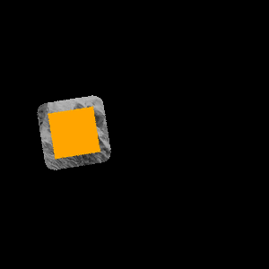

Image Dataset Example
from xaiunits.datagenerator.image_generation import BalancedImageDataset, ImbalancedImageDataset
data = BalancedImageDataset(
seed=0,
backgrounds=5,
shapes=10,
n_variants=4,
background_size=(300, 300),
shape_type="geometric",
position="random",
overlay_scale=0.3,
rotation=True,
shape_colors=["orange"],
contour_thickness=20,
)
def jupyter_display(img_tensor):
from torchvision import transforms
from IPython.display import display
display(transforms.ToPILImage()(img_tensor).convert("RGB"))
# Examining one datapoint from the dataset
x, y_label, context = data[0]
# x is an image tensor
print("x.shape:", x.shape)
jupyter_display(x)
# y is an integer label representing the foreground shape
print("y_label:", y_label)
# context is a dict that contains "ground_truth_attribute"
print("context:", list(context.keys()))
jupyter_display(context["ground_truth_attribute"])
x.shape: torch.Size([3, 300, 300])
y_label: 3
context: ['fg_shape', 'bg_label', 'fg_color', 'ground_truth_attribute']
# Note that the ground truth mask contains both the foreground shape and a small border around the shape
# (In order to capture CNN's triggering on the edge of the shape)
# The width of this border is set by the contour_thickness parameter when you define the dataset
jupyter_display(context["ground_truth_attribute"] * x)

# The imbalanced dataset has an extra parameter for imbalance
# This dataset also requires shapes>=2, and backgrounds>=shapes
imbalanced_data = ImbalancedImageDataset(
backgrounds=3,
shapes=2,
n_variants=4,
shape_colors="yellow",
background_size=(300, 300),
imbalance=0.5,
shuffled=False
)
# Here we have selected an imbalance of 0.5 and n_variants=4
# So for any given foreground shape, 2 images will be associated with one background
# And for that foreground shape, the remaining 2 images will be spread across the other backgrounds
print("First foreground shape")
jupyter_display(imbalanced_data[0][0])
jupyter_display(imbalanced_data[1][0])
jupyter_display(imbalanced_data[2][0])
jupyter_display(imbalanced_data[3][0])
First foreground shape
print("Second foreground shape") # since shapes=2, n_variants=4
jupyter_display(imbalanced_data[4][0])
jupyter_display(imbalanced_data[5][0])
jupyter_display(imbalanced_data[6][0])
jupyter_display(imbalanced_data[7][0])
Second foreground shape